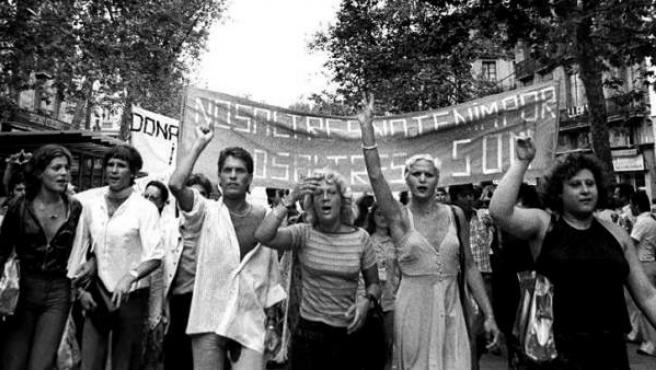
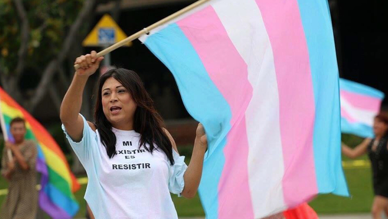
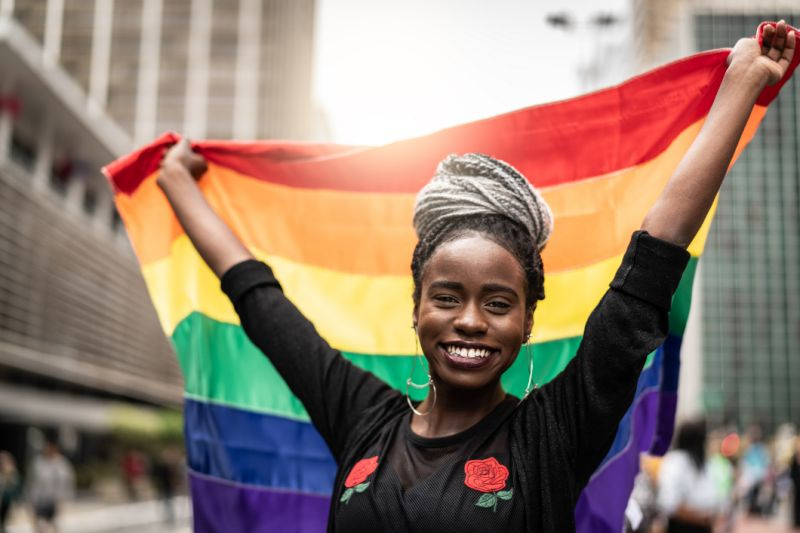
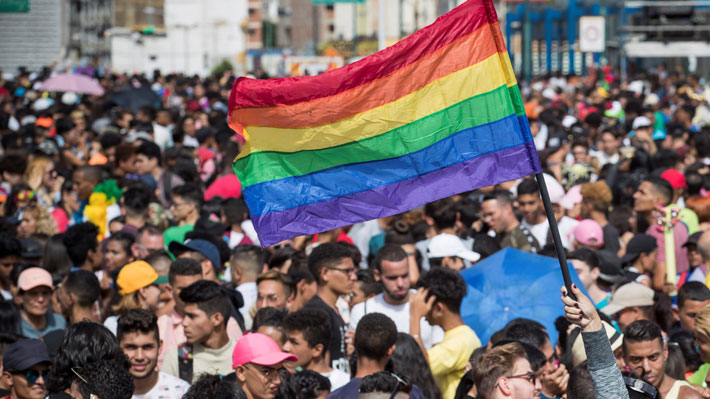

Importancia en imágenes
Alegría desbordante
A continuación, os mostraré unas imágenes de lo que representa el orgullo y la diversidad, aparte de su importancia en nuestro día a día.
A lo largo de la historia, este colectivo estuvo muy discriminado, pero supieron sobreponerse a las adversidades y crear un día especial, un ddía en el que todos nos juntamos en favor de los derechos de un colectivo oprimido durante años.
Después de 40 años reprimidos, fusilados y tratados como delincuentes, en 1997 en Barcelona, se pone en marcha el día del Orgullo.
No sólo se limita a manifestarse por una sexualidad. Las personas que de manifiestan por los derechos LGBT son variadas: Incluyen desde gays y lesbianas hasta transexuales.
Aunque algunas personas de este colectivo sufran bullying, depresiones y maltratos de diferentes tipos, siempre queda la alegría.
Cuando la gente se une, se puede llegar a ser imparable y, claramente, hay muchos a favor de nuestros derechos.
Todos los derechos reservados // Curso de HTML / CSS Wikipedia.es